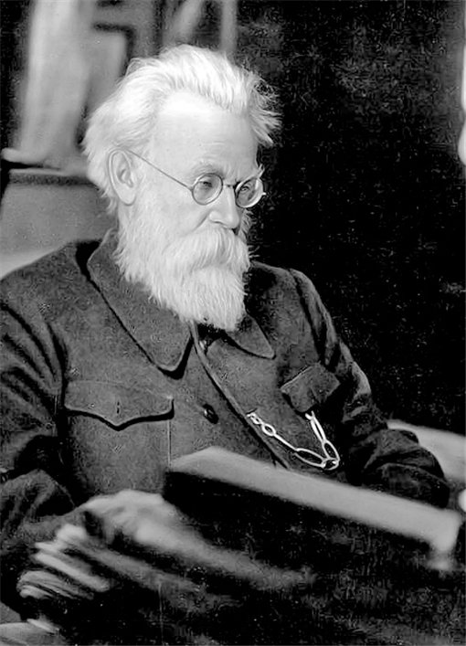

1945

Владимир Вернадский
В.И. Вернадский применяет понятие «ноосфера» с середины 30-х годов.
Он пришел к выводу, что появление человека с его научной мыслью
явилось естественным этапом эволюции биосферы. Ноосфера — это
развивающаяся под контролем Разума, под влиянием сознательной
человеческой деятельности геологическая оболочка планеты Земля.
1966
Сергей Королёв
Сергей Королев очень хотел, чтобы советский спутник полетел раньше,
чем американский, не вынося даже мысли о том, что «американы» (это
было словечко самого Королева) опередят СССР. Ведь еще в 1945-м он
говорил по поводу фон Брауна, ставшего «главным американским спецом»
по ракетам: «Мы этому фонбраунишке еще натянем нос...»
1968
Юрий Гагарин
“Вот жена окончательно поправится, погружу свое семейство на
катерок, есть у меня такой, и махну куда-нибудь на природу.
Порыбачить, у костра посидеть, поесть ухи… Но ведь вас такие мои
мечты не устраивают. Вам космические подавай. А в этой области нам
высказывать мечты не положено. Разве что общую для всех космонавтов,
самую заветную: пошагать по другой планете, чтобы на ее пыльных
тропинках оставить и наши следы, как в песне.“
Живой
Илон Маск
“Если вернуться на несколько сотен лет назад, все, что мы сегодня
считаем обычными вещами, покажется магией — разговоры на расстоянии,
передача изображений, полеты, пророчества, основанные на обработке
огромных объемов информации. Несколько сот лет назад это выглядело
бы как волшебство.“